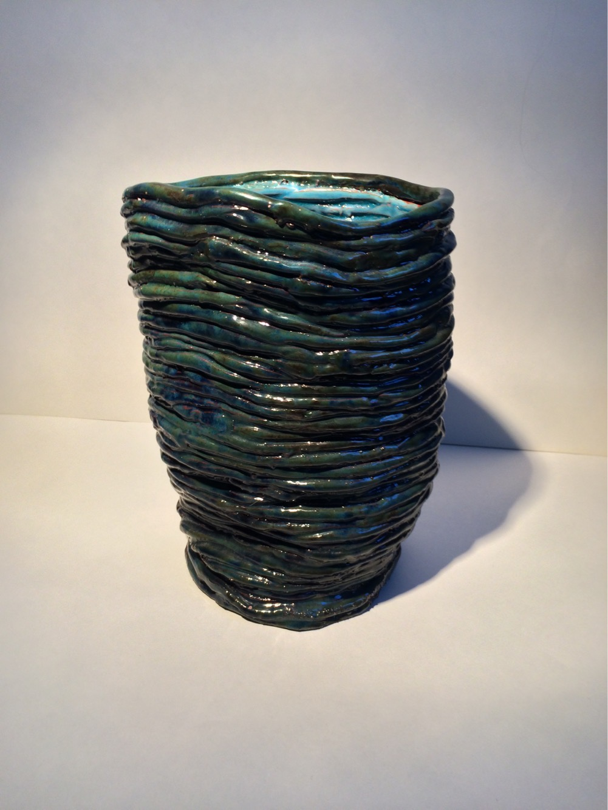
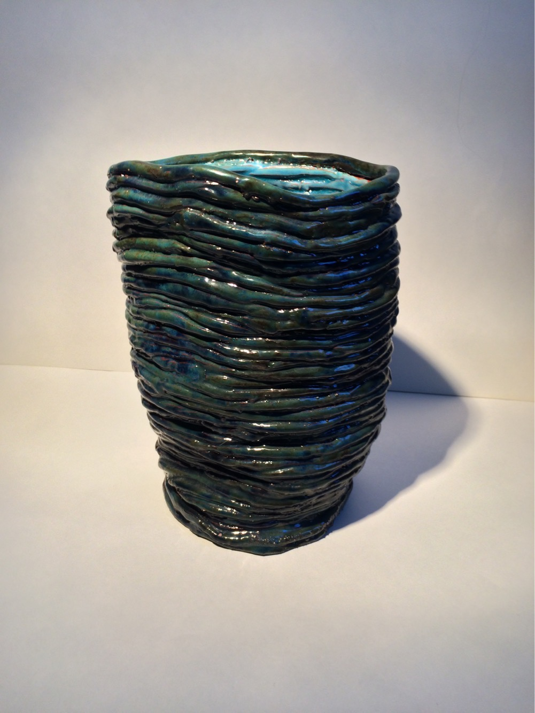

About Me
I am currently a junior at Macaulay Honors College at Brooklyn College majoring in Computer Science and more recently Multimedia Computing. While college was the first place where I was exposed to coding and computer science I soon found a deep love for the puzzle-like problem-solving skills involved in code creation and debugging. Experimenting with simple HTML and CSS code in my freshman year of college is what pushed me to commit to Computer Science as my major. Since then I've also started to explore how the user experiences and interacts with software by learning about digital and internet art through my Multimedia Computing major. Currently, a couple of my friends and I are in the pre-production stage of creating a fantasy adventure game utilizing the Unity game engine for macOS, Microsoft Windows, and Linux.
Outside of school many of my hobbies revolve around the skills I gained while being an art major in high school. When I have some free time I pick up a pencil and draw a portrait of my favorite game or movie character in my sketchbook. I am also currently working on a still life painting using acrylic paints, which is pretty new to me since I usually use water-soluble oil paints. Before the pandemic, I also really enjoyed going to escape rooms with my friends and hope to go once again once it's safe.
My Artwork
 

10 Things On My Bucket List
Here is a list of some things that are currently on my bucket list.
- Get an internship in college.
- Get a job in the tech industry.
- Make my own indie game.
- Build my own gaming PC.
- Start making more commits on GitHub.
- Start living by myself.
- Be self sufficient.
- Try streaming gameplay.
- DM my first Dungeons and Dragons Game.
- Paint more.
- Get an internship in college.
- Get a job in the tech industry.
- Make my own indie game.
- Build my own gaming PC.
- Start making more commits on GitHub.
- Start living by myself.
- Be self sufficient.
- Try streaming gameplay.
- DM my first Dungeons and Dragons Game.
- Paint more.
| Internet Art and Design | Applied Software Development | Multimedia Computing | Game Design and Development | Database Systems | |
|---|---|---|---|---|---|
| Description: | Study of interface development and animation for the Internet. Focus on technical and aesthetic considerations of website development. | Creating application designs and diagrams, applying broader software engineering concepts, and properly translating student ideas to code with the goal of delivering comprehensive project-based full-stack Web applications. | Hardware, software, and system design issues in the multimedia presentation of information. Multimedia standards. Audio and video compression techniques. Hypermedia database systems. Programming and the use of multimedia authoring systems. Survey of representative hypermedia applications. | An introduction to game design and programming. Topics include analysis of existing games, game mechanics, social games. Game development using a game engine, including the use of assets and prefabs, movement, animations, audio and data persistence. | Introduction to database systems. Comparison to file processing systems. Data models. Relational, hierarchical, and network systems. Study of several real-world database management systems, with an emphasis on microcomputer applications. Database recovery query and transaction processing, concurrency. Distributed and object-oriented databases. |